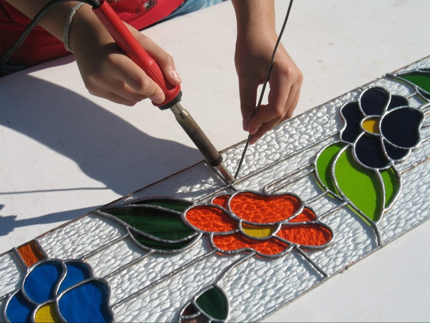
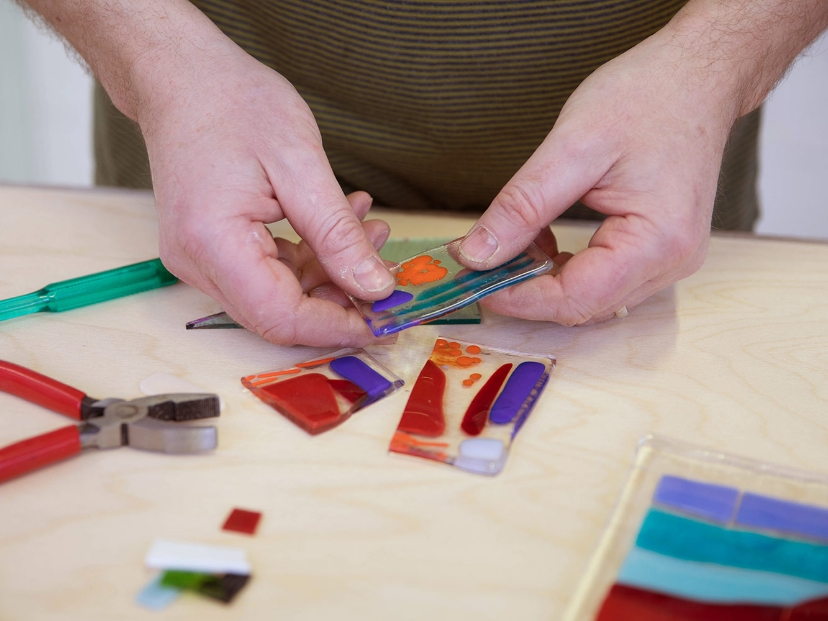
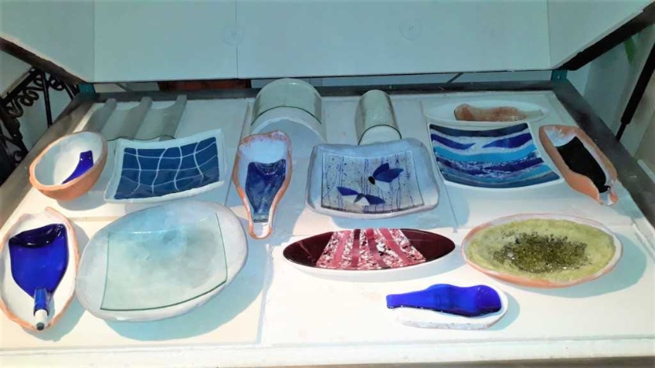
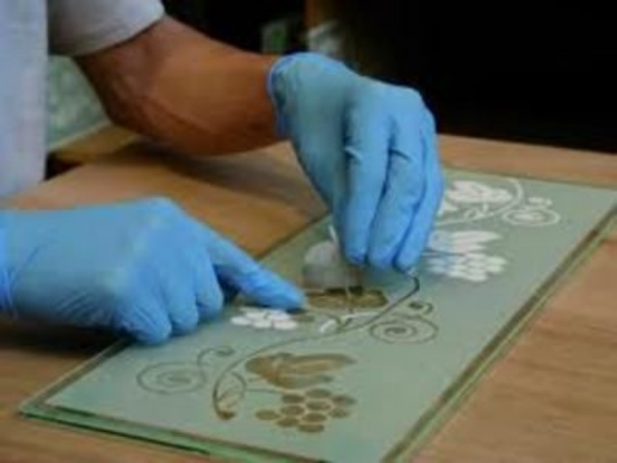

Notre atelier “Compagnon du vitrail” a vu le jour en 1986 dans les locaux d’une ancienne imprimerie. Il se situe au 35 Rue des Jacobins en plein cœur d’Amiens à deux pas de la cathédrale.
L’atelier propose un large éventail de matières et de finitions: verres soufflés, étirés, imprimés, montage au plomb, fusing, thermoformage, sablage, tiffany, peinture à la grisaille, aux émaux et jaunes d’argent, création à l’aérographe, gravure à l'acide et au diamant.
Nous mettons nos services à votre disposition et nous dispensons également des cours d’initiation pour adultes ou enfants, pour plus de renseignements n'hésitez pas à prendre contact via le formulaire.

La technique du vitrail traditionnel
Cette méthode se réalise en 5 étapes :
1. Création de la maquette (esquisse colorée très précise qui révèle la future apparence du vitrail et indique le tracé des plombs. Elle fait fonction de référence tout au long de l'élaboration du vitrail)
2. Coupe du verre (le gabarit de la pièce est posé sur le verre et est reproduit fidèlement puis découpé)
3. Décoration des pièces (utilisation des deux techniques de peinture qui adhèrent au verre suite à la cuisson : la grisaille ou les émaux)
4. Mise au plomb ( Le sertissage ou encore montage, consiste à assembler les pièces de verre en les encastrant dans des baguettes de plomb)
5. Masticage ( sert à consolider les soudures terminées, pour cela un mastic semi-liquide est appliqué afin de combler les petits espaces entre le verre et le plomb)

La technique Tiffany

1. Le dessin sera transformé en gabarits de papier Canson, autant qu’il y a de pièces à réaliser.
2. Chaque gabarit est posé sur le verre et détouré au feutre indélébile.
3. Les pièces de verre sont marquées profondément avec un coupe-verre. On cassera ensuite au format avec une pince.
4. Les bords de la pièce sont égalisés avec la meuleuse.
5. Un ruban de cuivre autocollant est placé tout autour de la pièce de verre.
6. Quelques gouttes de décapant pour cuivre sont posées à l’endroit de la future soudure.
7. Les pièces sont assemblées au fer à souder avec une baguette d’étain.
8. Une légère patine noire est posée sur les soudures.
La technique fusing
1- Utilisation d’une plaque de verre appelée « base » puis superposition d’autres morceaux de verres : en plaque, concassés, fritte, fils ou de différentes couleurs en fonction du motif souhaité, sur cette “base”. Pour effectuer un fusing réussi, les verres doivent être testés compatibles entre eux et appartenir à une même catégorie.
2- Il faut mettre un séparateur sec sur la sole du four froid, (plâtre, fibre céramique, talc, ponce) de dimensions supérieures à la « base ».
3- Placer la préparation en verre dans le four. La maîtrise de la cuisson est très importante : à 800 degrés environ, le verre commence à fondre et les différentes plaques de verre superposées commencent à fusionner. On cuit la plaque de verre à cette température pendant environ 24 heures.
4- Sortir la pièce et vérifier au polariscope qu'il ne reste plus de tensions pouvant provoquer la casse du verre.

La technique du thermoformage

Cette technique répond aux mêmes exigences que le fusing et peut y être associée, c’est donc une technique dite complémentaire du fusing.
Elle est utilisée pour donner une forme, un relief ou une texture particulière à un verre plat.
Le ramollissement permet à la feuille d’épouser la forme et la texture d’un moule ou d’une matière support.
Tous les verres peuvent être déformés à condition qu'ils soient plats.
Après avoir fait cuire et refroidi une première fois le vitrail, il est possible de le remettre dans le four sur un moule à la forme désirée.
La technique du sablage
Le sablage du verre représente un traitement dépolissant. L’objectif principal de la technique du sablage, c’est de permettre d’obtenir des décorations très particulières, avec un aspect régulier ou non, sur des objets composés d’une surface en verre.
Concernant le principe de fonctionnement, c’est un processus complexe nécessitant de projeter à très grande vitesse, des grains de sable avec une taille très particulière. Plus le grain de sable utilisé sera gros, plus le traitement de surface sera grossier, et inversement.
Les grains de sable sont ensuite projetés avec un jet d’air comprimé sur la surface du verre, l’objectif c’est de créer des petites cavités intérieures, donnant cet aspect très particulier sur le verre. On parle à ce moment précis, d’aspect dépoli.
